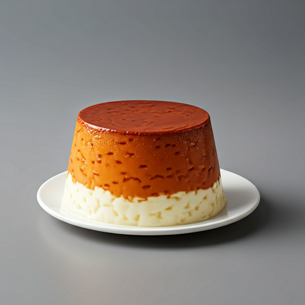

schedule 60 min
bar_chart Media
star 4.8
Biezpienmaize (Pastel de Requesón)
Un pastel clásico de las cafeterías letonas. Base de masa quebrada con un relleno suave de requesón y pasas.
shopping_basket Ingredientes
- Para la base: 200g harina, 100g mantequilla, 1 huevo, 2 cdas azúcar
- 500g de requesón (biezpiens) seco
- 3 huevos
- 150g de azúcar
- 100g de pasas
- 1 cucharada de harina o sémola
- Ralladura de limón
restaurant_menu Preparación
1
Mezcla los ingredientes de la base hasta formar una masa. Forra un molde rectangular y refrigera 30 min.
2
Prehornea la base a 180°C durante 10 minutos.
3
Bate los huevos con el azúcar hasta que espumen. Añade el requesón, la sémola, la ralladura y las pasas.
4
Vierte la mezcla sobre la base precocida.
5
Hornea a 180°C durante 35-40 minutos hasta que el relleno esté firme y dorado.
6
Deja enfriar y corta en cuadrados.